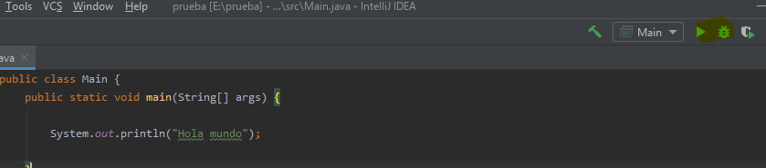

Primeros Pasos¶
Introduccion¶
En el transcurso de este documento aprenderemos a utilizar la funciones basicas de intellij, el IDE (Interface Developer Enviroment) de Jetbrains enfocado en la programacion con Java.
Instalacion¶
Para hacernos con el instalador de esta aplicacion, debemos ir a la pagina oficial de Jetbrains donde encontraremos las diferentes versiones de Intellij que són:
- Ultimate (de pago)
- Community (gratuita)
Aqui os dejo las caracteristicas que las diferencian.

Una vez has elegido la version que mas se adapta a tus necesidades empzamos con la instalación, siendo el primer paso hace doble clic en el archivo que nos hemos descargado.
Primero elegimos el directorio donde queremos instalar Intellij.

Elegimos las caracteristicas que creamos necesarias para nuestro caso.
{kind=link}
Aceptamos terminos y condiciones de uso.

Elegimos el tema del visionado de la aplicacion.
{kind=link}
Seguidamente se te ofrece la posibilidad de añadir unos Plugins que intellij considera que son de uso habitual en la comunidad.


Creacion de un proyecto¶
Una vez abierto Intellij veremos que nos da la opcion de “Create New Project”.

Elegimos el nombre del proyecto.
{kind=link}
Elegimos la version de Java que utilizaremos.

Creamos las clases necesarias para el proyecto.

Introducimos el codigo que printera el clasico “Hola Mundo”
{kind=link}
Arriba a la derecha veremos el modo Run y el modo debbug.
{kind=link}
En el caso del modo Run nos ejecutara el programa de modo normal en el caso de que no haya ningún error.

En el caso del modo debbug nos ejecutara el programa avisandonos de los posibles bugs que contenga.

Ampliacion del IDE¶
En nuestro caso instalaremos el plugin Rainglow Color Schemes, que nos permitira tener mas variaciones de color predefinidas para nuestro IDE.
Si apretamos Ctrl+Alt+S entraremos en Settings donde en la pestaña de plugins podremos utilizar la barra buscadora para encontrar el plugin deseado, despues de instalarlo nos hara reiniciar el IDE para poder utilizarlo

Ahora volveremos a entrar a Settigs y veremos el aprtado del nuevo plugin que nos permitira cambiar la gama de colores predefinidos por otra.

Interficies Grafiques¶
Para instalar interficies grafiques debemos instalarlas a traves de plugins, en este caso utilizaremos el plugin JFormDesigner para crear formularios.
{kind=link}
Creamos el nuevo formulario de la misma forma que creamos las clases

Aqui vemos la ventana que nos proporciona el IDE a partir del plugin para crear interficies graficas.

Optimización de codigo¶
Depurar el codigo¶
La depuración de codigos es el proceso de identificar y corregir errores, y lo que vamos a ver en la siguiente parte de la guia, seran las herramientas que nos da Intellij para facilitarnos esta parte del desarrollo.
Puntos de Interrupcion¶
los puntos de Interrupcion son puntos marcados por el programador que le permitiran ver los resultados del programa paso a paso, y asi identificar de manera rapida los fallos del codigo.
Para poner un punto de interrupcion en intellij nos colocaremos en la linea que queramos que sea le punto de depuración y apretaremos “Ctrl+F8” de manera que aprecera un punto rojo al lado de la linea.
{kind=link}
Para comprobar el codigo según el punto de interrupción debemos hacer click en “mayus+F9” y veremos el contenido de la variables hasta el momento
{kind=link}
Refactoring¶
El refactor se basa en cambiar codigo de manera eficiente.
Una manera de hacerlo es cambiar el nombre de una función, para hacerlo deberemos apretra “Mayus+F6” encima de la funcion.
{kind=link}
Cuando cambiemos el nombre, veremos que se habra cambiado en todas la veces que aparecia en el programa.
Linterns¶
intellij tiene sus propios linterns que nos permitiran crear directrices para que el codigo generado por varios desarrolladores sea uniforme. Estos linterns se muestran el la parta de derecha de la pantalla, sinedo de color verde(Esta todo en orden), color amarillo(algun problema que no afectara a la funcionalidad del codigo), rojo (problemas funcionales).
{kind=link}
Control de versiones¶
Intellij incorpora de manera nativa, la funcion de enlazar tu proyecto a git.
{kind=link}
Nos podremos logear en nuestra cuenta github.
{kind=link}
Tambien nos permite enlazar el proyecto con un repositorio de github.
{kind=link}
Y una vez estamos logeados y tenemos el proyecto enlazado podremos hacer commit.
{kind=link}
Finalmaente podremos ejecutar el git push.
{kind=link}